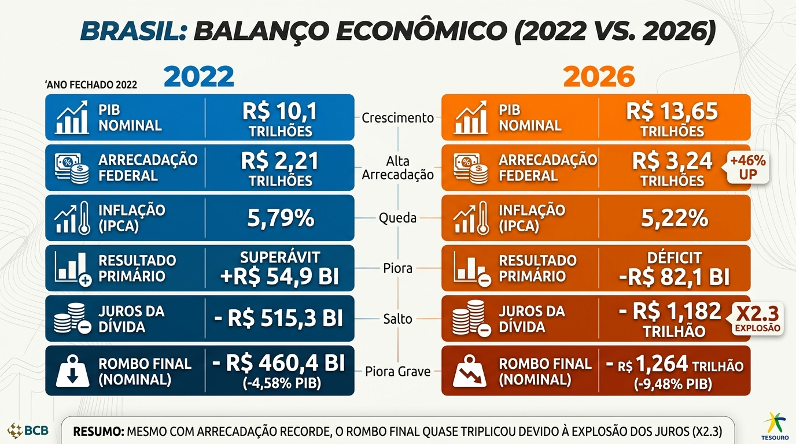

Fontes do Story
Brasil: Balanço Econômico (2022 vs. 2026). Abaixo, o infográfico publicado e as fontes de cada dado.

Dados de 2022
- Balanço da dívida pública 2022 Rádio Câmara camara.leg.br/radio/programas/937349-balanco-2022-divida-publica/
- Fechamento da dívida federal 2022 Agência Brasil agenciabrasil.ebc.com.br/economia/noticia/2023-01/divida-publica-fecha-2022-perto-de-r-6-trilhoes
- Análise do superávit primário 2022 Rádio Câmara camara.leg.br/radio/programas/937356-balanco-2022-superavit-primario/
- Análise do superávit primário 2022 G1 Economia globo.com
Dados de 2026
- Estatísticas fiscais de 2026 Banco Central do Brasil bcb.gov.br/estatisticas/estatisticasfiscais
- Projeções do Prisma Fiscal de 2026 Ministério da Fazenda gov.br/fazenda/pt-br/assuntos/noticias/2026/outubro/prisma-fiscal-eleva-projecao-de-deficit-para-2026-e-reduz-estimativa-para-2027
- Levantamento do rombo fiscal de 2026 Poder360 poder360.com.br/poder-economia/mercado-eleva-projecao-de-deficit-primario-de-2026-a-r-5305-bi/